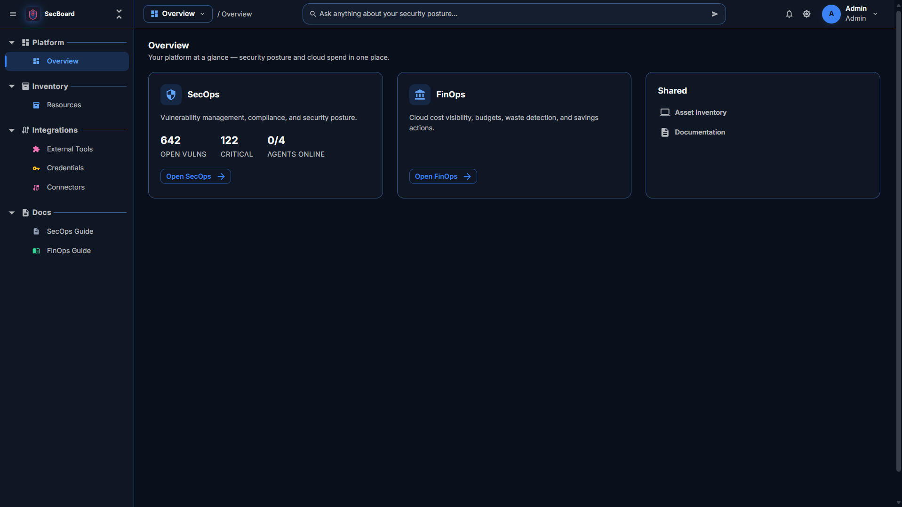

SecOps
Are we exposed? Open risks, how serious they are, who owns them, and how long they have waited.
Six practices. Each one stands alone.
OpsGuru is the workspace we built for that question. Security, cloud cost, performance, AI workloads, incidents, and data health each have a clear view. They share one list of systems. Every open item has an owner, a status, and the evidence behind it.
You still decide what to fix or what to cut. The product shows the evidence behind each answer.

Practices
Platform
Estates
Select a layer to see the detail
One workspace for the people who run security, cost, performance, AI, incidents, and data
What it does
Each practice answers a different question about the same systems. The work moves the same way in every one: see what is open, name an owner, and keep the evidence.
Are we exposed? Open risks, how serious they are, who owns them, and how long they have waited.
Are we paying for what we use? The bill, the waste, and the resources nobody owns.
Are services meeting the targets we set? Scheduled checks for speed, errors, capacity, and certificates.
Are our AI workloads known, safe, and worth the spend? Usage, cost, idle endpoints, and shadow models.
What happened, and what will we change? The record, the owner, the timeline, and the postmortem.
Can we trust the data? Freshness, volume, schema changes, and who owns each source.
SecOps · Security
Scanners already find problems. SecOps puts them on one list: what is still open, how serious it is, who owns it, how long it has waited, and whether attackers are already using it. The score is a guide. A person still chooses the fix.
FinOps · Cost
FinOps starts with where the money goes and who owns it. Waste comes after that. The history stays with the resource, so a saving is something you can explain in a budget review.
A higher score means more of the bill has an owner, and less of it is waste. Open cost problems pull the score down until someone deals with them.
PerfOps · Performance
A service can be secure and still miss the response time your customers expect. PerfOps runs scheduled checks through an agent you already control. You declare the target. OpsGuru records whether the service met it, whether the result is getting worse, and who should look. Your live metrics platform stays where it is.
AI-Ops · AI workloads
AI-Ops is for the models and endpoints the company operates. It reads usage and cost from the providers you connect, checks self-hosted endpoints, and opens a finding when something needs an owner. Prompts and answers stay out of OpsGuru.
IncidentOps · Incidents
IncidentOps is the review of an incident, not the pager. Alerts from the tools you already use can group into one record. The record keeps the status, the owner, the systems involved, and the timeline. When it closes, the postmortem can hand real work to the practice that has to do it.
DataOps · Data health
DataOps runs read-only checks against the sources you register. A check compares what you measured with the rule you wrote. The result is a number and a pass or fail. Row contents stay in the database.
The goal
The goal of OpsGuru is a meeting where security, finance, and engineering are looking at the same systems. A leader should be able to say whether the company is exposed, overspending, missing its service targets, or running AI it cannot account for.
The agent and your cloud accounts put hosts, cloud resources, and the software on them on one inventory. Every practice reads that list.
A security risk, a waste item, a missed target, an AI finding, and a data check all move the same way: open, in progress, resolved, or accepted. Someone is named on it.
A cost cut sits next to the security and performance picture. A postmortem action becomes a finding in the practice that has to do the work.
How it works
A small agent runs next to the scanners you already trust. It sends results back. Each customer’s data stays separate.
People, systems, scans, and reports stay inside your own workspace. Some people can change things. Others can only look.
The agent checks in so you can see if it is online, busy, or offline. It runs the tools installed on that machine.
Findings show the tool, the target, how serious it is, and the original result. A failed scan does not hide the others.
These are the scanners and cloud reads the product can bring in. You only turn on the ones you use.
SecOps and FinOps include a chat that answers in everyday language and points at the evidence. Use it to get there faster. AI-Ops is a different practice: it governs the models and endpoints you run.
Run a scan now or on a schedule, assign a fix, and see who is allowed to do what. Agents and usage sit in the same workspace.
OpsGuru does not replace your scanners, your live metrics platform, or your paging tool. It does not certify compliance, and it does not promise that nothing will go wrong. You still review the evidence.
Product
Real screens from OpsGuru. Pick a view, or open it larger. They show the workspace. They are not a reading of your own systems.
FAQ
Use these when someone on your team asks what OpsGuru is, and what it leaves alone.
It is the workspace Maatara Consulting built for one question: are the systems we run safe, on target, and worth what we pay? Security, cloud cost, performance, AI workloads, incidents, and data health each have a view. They share one list of systems. Every open item has an owner, a status, and the evidence behind it.
Companies that already run cloud and on-premises systems, and need security, finance, platform, and engineering to look at the same inventory. The buyer is usually the person who owns the risk, the bill, the service targets, or the AI the company has started to run.
It checks services against targets you declare, such as availability, response time, and error rate. Checks run on a schedule through your agent. A miss, a worsening result, tight capacity, or a certificate close to expiry becomes a finding with an owner. If you connect a pipeline, the same area shows how often you deploy, how long change takes, how often change fails, and how long restore takes. Your live metrics platform stays in place.
It governs the AI workloads you run: model usage and cost, models nobody registered, idle endpoints, and endpoints that answer without authentication. Prompts and answers are not stored. The chat inside SecOps and FinOps is a separate helper for reading evidence.
It keeps the record of an incident: status, owner, timeline, on-call roster, and the postmortem. Alerts from tools you already use can group into one incident. Action items from the postmortem can become findings in security, cost, performance, AI, or data. Phone and SMS escalation stay with your paging tool.
It runs read-only checks on the sources you register: freshness, volume against a recent baseline, schema changes, and quality rules your team writes. The result is a measurement and a finding. Row contents stay in the database.
No. An agent runs the tools you already have and sends the results back. Your scanners and cloud accounts stay in place. You turn on the ones you use.
No. PerfOps is a scheduled check against targets you set, not a live metrics wall. IncidentOps keeps the record and the review. Paging stays with the on-call tool you already run. OpsGuru can notify that tool when an incident opens.
It mixes four things: how much spend is allocated (30%), how much has an owner (25%), how little is wasted (30%), and how many cost problems are still open (15%). A higher score means more of the bill is explained.
You can see how serious it is, whether attackers are already using it, how old it is, which system it sits on, and who it is assigned to. The score is a guide. A person still decides.
No. Chat in SecOps and FinOps can miss something or get it wrong. Use it to reach the scan, the check, or the bill faster. A person reviews anything that changes a system or the spend.
No. It can show how you are doing against the checks you turn on. It does not issue a compliance certificate, and it does not promise a breach will not happen.
Next step
Tell us which clouds you run, which tools you already trust, and which of the six questions is hardest to answer. An engineer from Maatara Consulting replies within one business day.